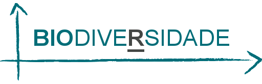
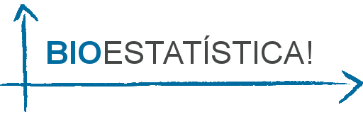
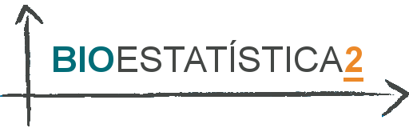

Aprenda R! e Bioestatística
Se você deseja aprender bioestatística, a BIODATA promove worshops, cursos e treinamentos em
build
attach_file
beenhere
Cursos Completos
-

Diversidade Ecológica e Conservação para Consultoria Ambiental no R
Curso direto ao ponto pra quem tem pouco tempo a perder. Pouca carga teórica, foco na prática.
alarm
swap_vert
playlist_add_check
Introdução ao R: o ambiente, pacotes, scripts e gráficos.
Estimadores de Riqueza de Espécies, Curvas de Acumulação e Rarefação, Chao 1 e 2, ACE e ICE, Jackknife 1 e 2, Diversidade de Espécies, Shannon, Similaridade Biótica, Jaccard, Sorensen, Bootstrap, Morista-Horn

Delineamento Experimental e Introdução ao R na Ecologia
Curso introdutório com carga teórica e prática sobre Bioestatística utilizando o R.
alarm
swap_vert
playlist_add_check
O que é hipótese? Como formular uma hipótese? Delineamento experimental e repetições, Testes estatísticos paramétricos e não-paramétricos; Introdução ao R e Rstudio - o ambiente, pacotes, scripts e gráficos; Montando um modelo estatístico: Dados com distribuição normal - ANOVA, Regressão Linear e ANCOVA; Dados com distribuição não-normal: GLM - Poisson e Binomial; Análise de resíduos

Tópicos Avançados em Bioestatística no R
Recomendado apenas para aqueles que já conhecem a linguagem R.
alarm 8-10 horas
swap_vert
playlist_add_check
Contraste de modelos, AIC, Gráficos - tópico avançado e RMarkdown - produzindo outputs estatísticos de alto nível
Ciência de Dados no R
alarm 18-20 horas
swap_vert
playlist_add_check
O processo da análise de dados; Definindo a questão a ser trabalhada; Análise exploratória; Modelagem estatística; Inferência x Predição; Interpretação e apresentação dos dados.
Personalize o seu Curso de Bioestatística no R!
Para